Home after turn 3
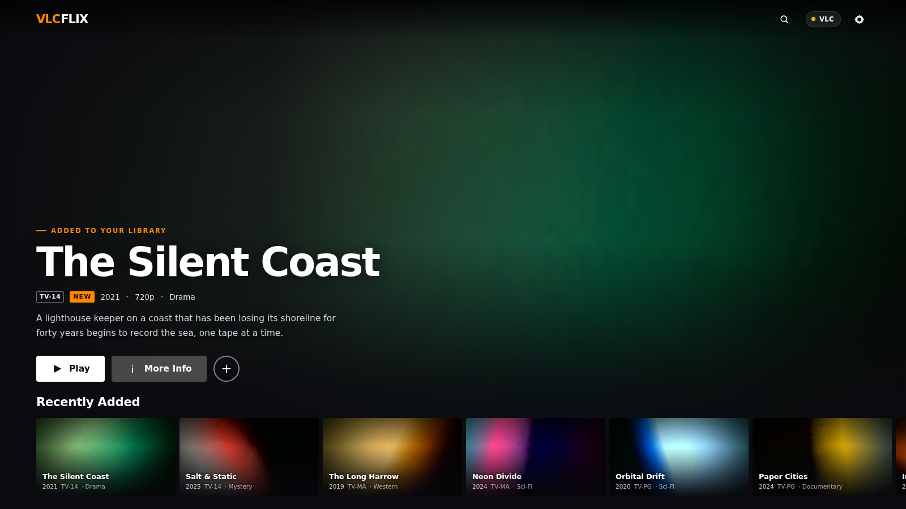
js/home-viewport.png
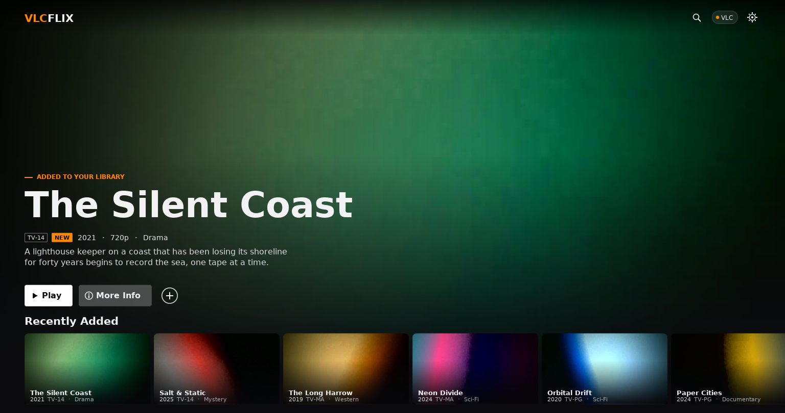
cpp/window-home-rest.png — live window, scroll 0
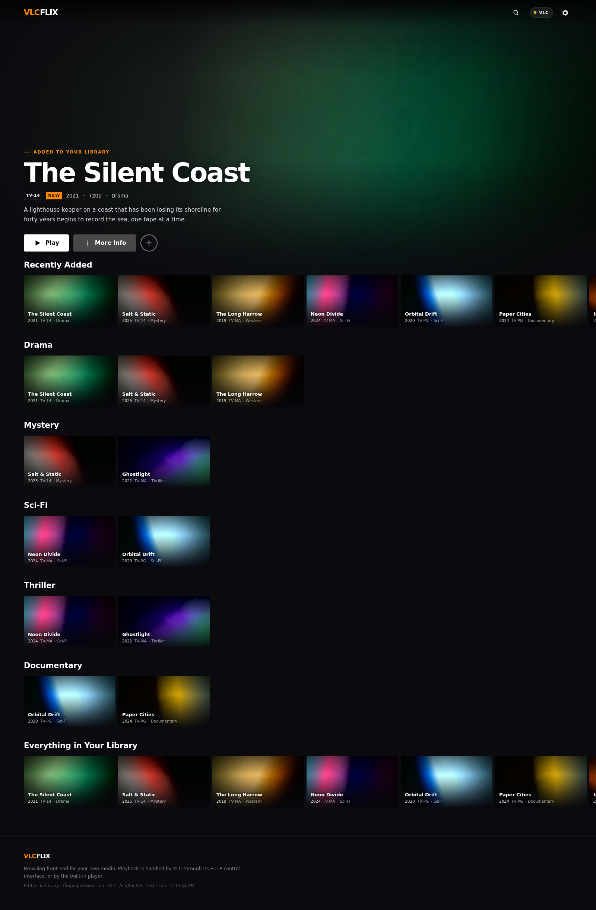
js/home-full.png — footer is the end
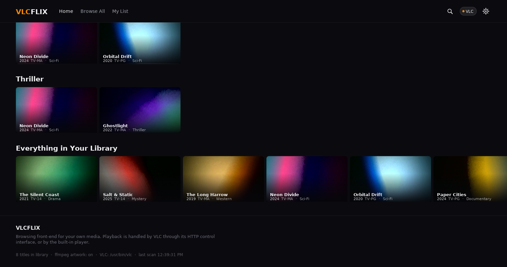
cpp/window-home-end.png — further wheels changed 0 pixels
Home, first screen (turn 2, before)
js/home-viewport.png — title on the art
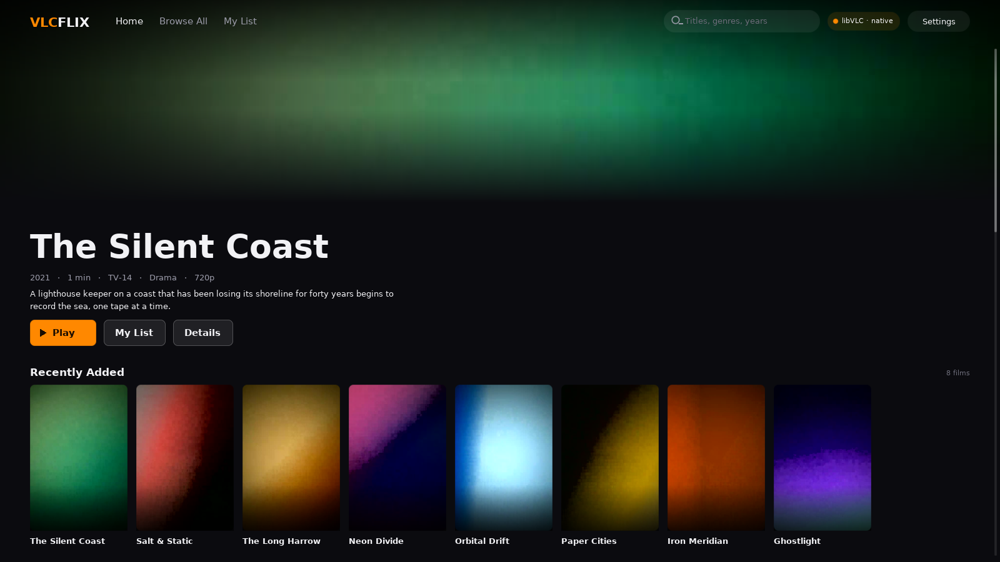
cpp/home.png — title under the art, row cut off
Home, after scrolling
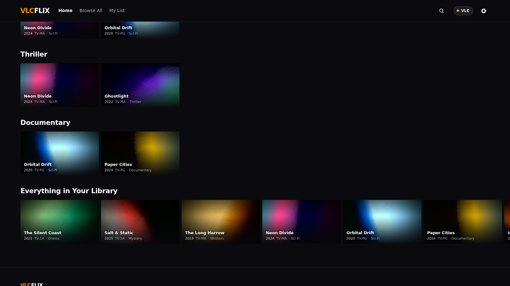
js/home-scroll-1400.png — scrollY 1400 of 1542
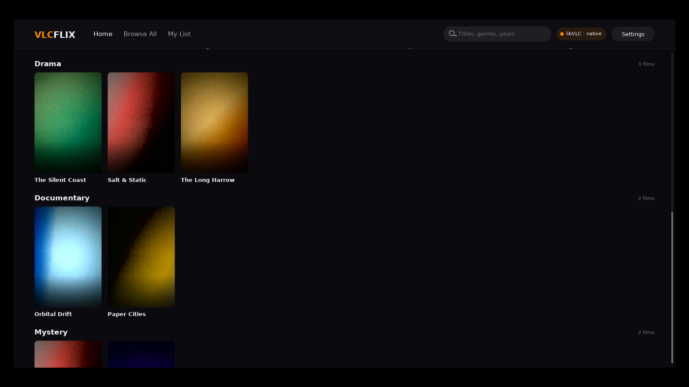
cpp/window-after-wheel.png — stuck, Mystery row clipped
Home, the whole JS document (2442 px)
js/home-full.png
Detail
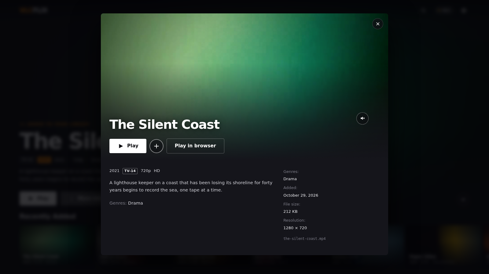
js/detail-top.png
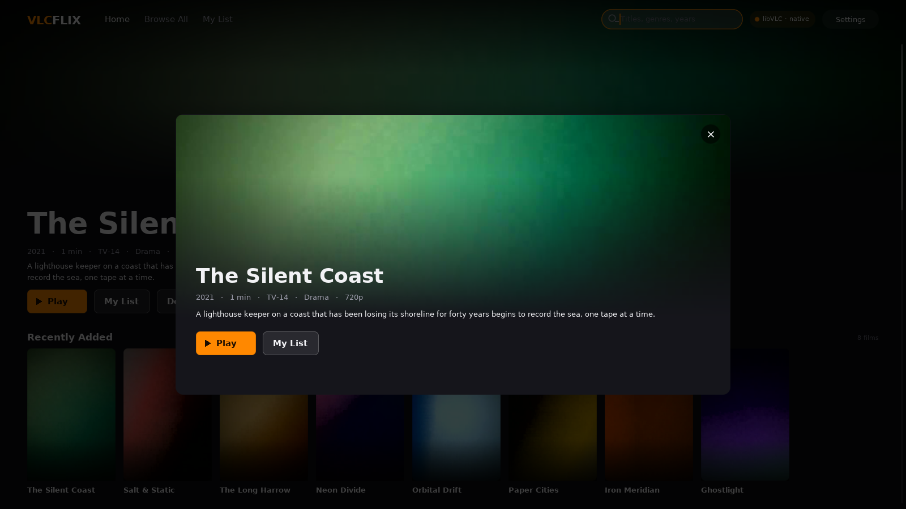
cpp/detail.png
Browse
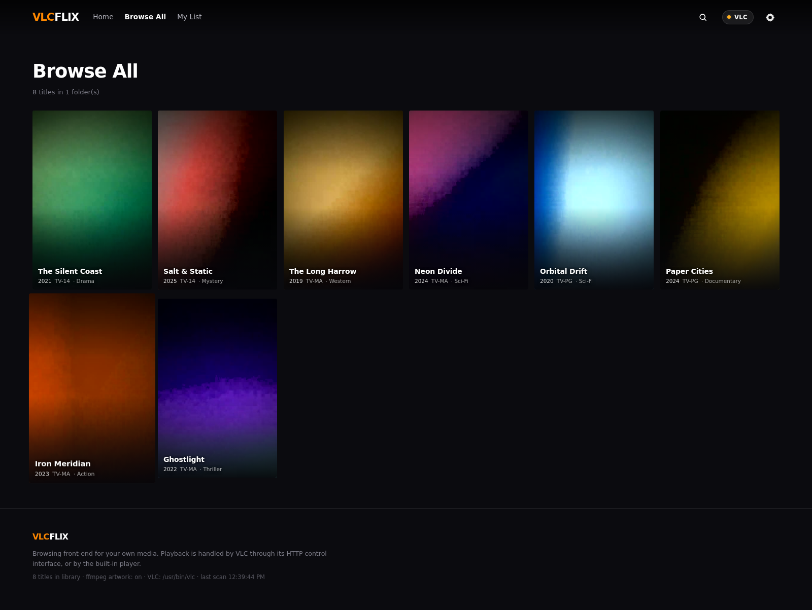
js/browse-full.png
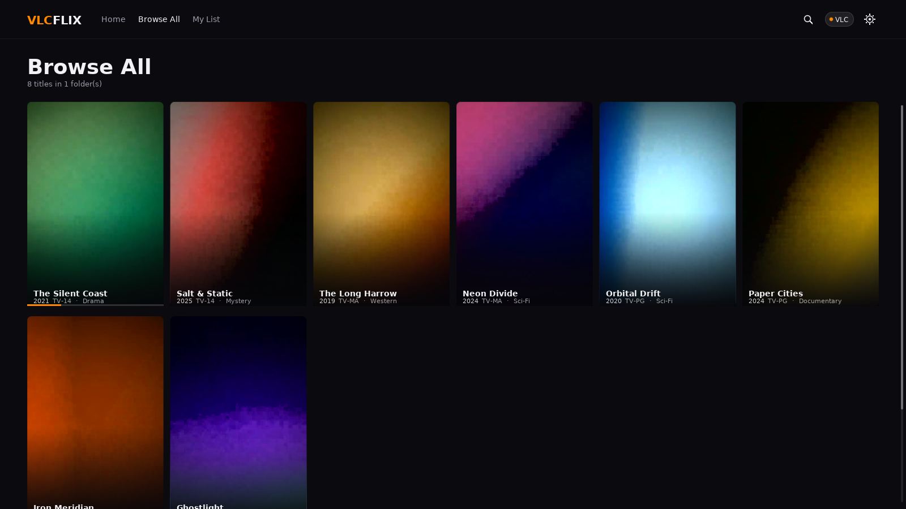
cpp/browse.png
Search — the JS match is below the fold
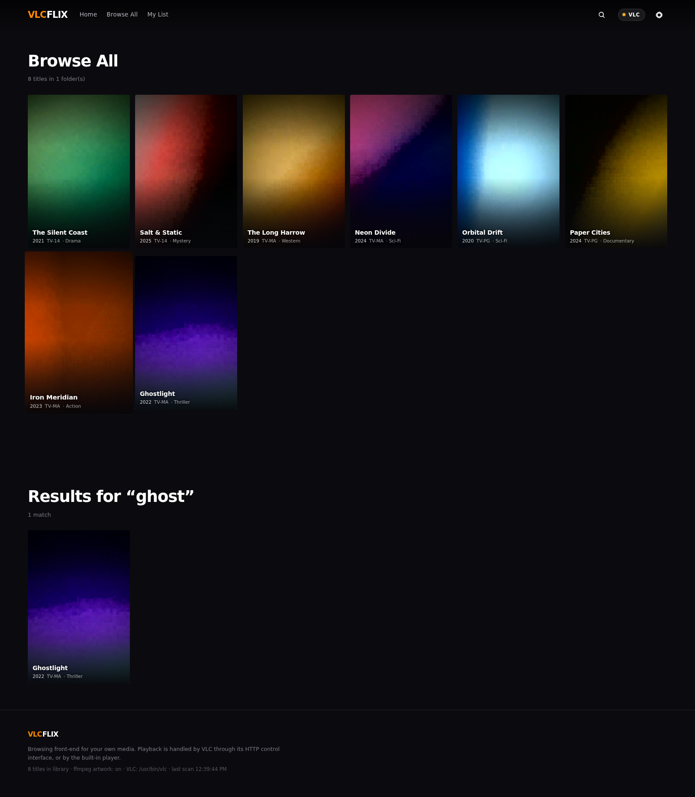
js/search-full.png
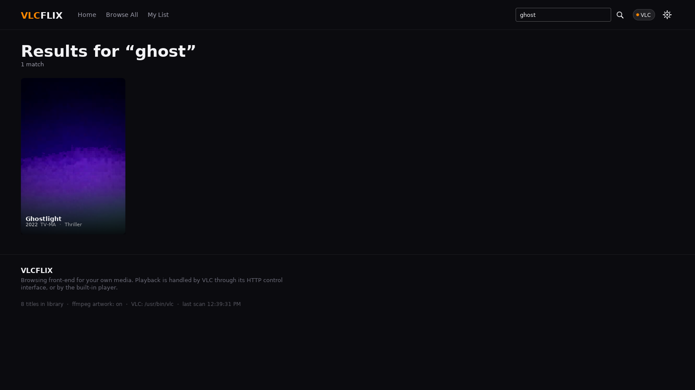
cpp/search-ghost.png
Settings — JS bottom of the sheet
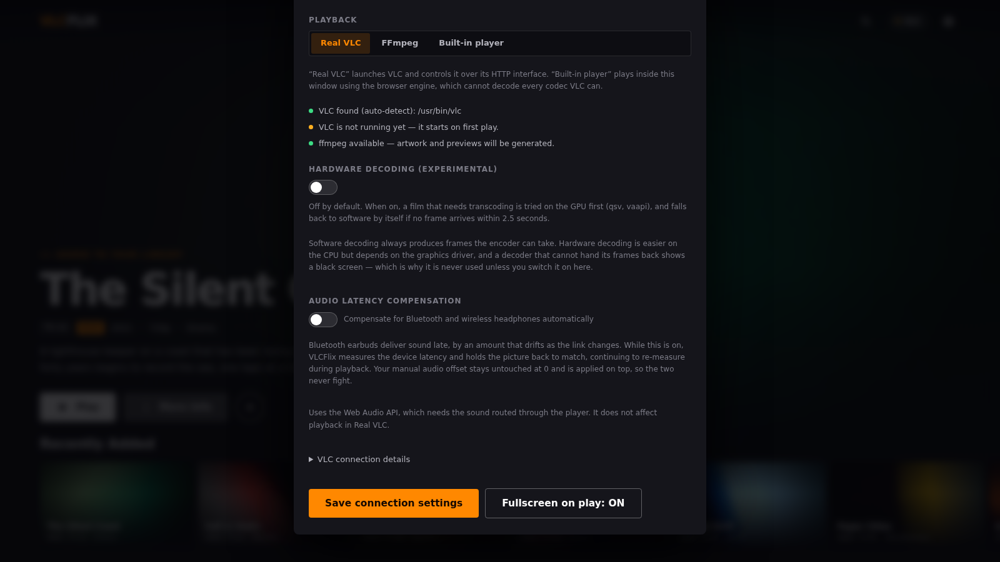
js/settings-scrolled.png
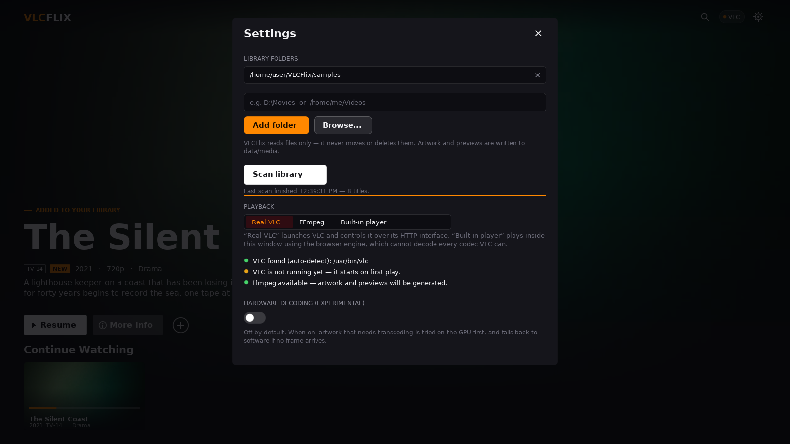
cpp/settings.png — scrollbar, top only
Player
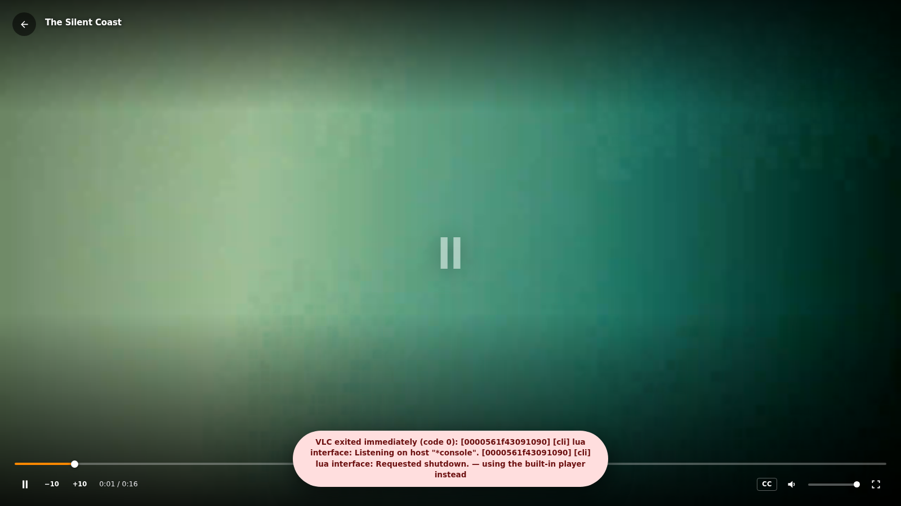
js/player.png
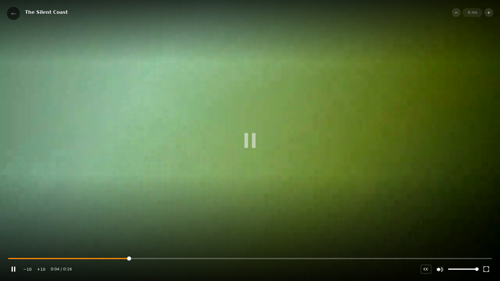
cpp/player.png